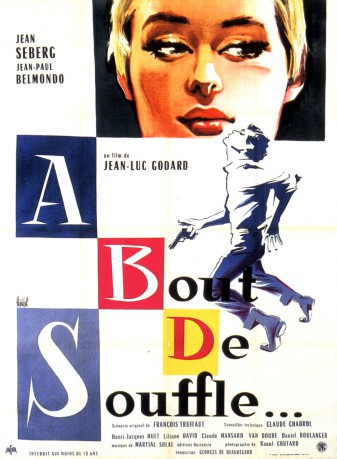
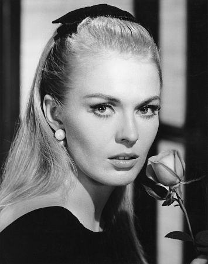

#8032 Außer Atem
Alternativ: Breathless (Englischer Titel)
 
 IMDB-Wertung: 7.9 / 10
IMDB-Wertung: 7.9 / 10  Metascore: 0
Metascore: 0 
Michel Poiccard, an irresponsible sociopath and small-time thief, steals a car and impulsively murders the motorcycle policeman who pursues him. Now wanted by the authorities, he renews his relationship with Patricia Franchini, a hip American girl studying journalism at the Sorbonne, whom he had met in Nice a few weeks earlier. Before leaving Paris, he plans to collect a debt from an underworld acquaintance and expects her to accompany him on his planned getaway to Italy. Even with his face in the local papers and media, Poiccard seems oblivious to the dragnet that is slowly closing around him as he recklessly pursues his love of American movies and libidinous interest in the beautiful American.
Jahr: 1960
Dauer: 90 Minuten
FSK: 16
Land: Frankreich Studio: Pallas FilmverleihTonspuren:
Untertitel: Deutsch,
Auflösung: 1080p (1440x1080) Größe: 8140 MB
Genre: Drama, Krimi
Regisseur:  Jean-Luc Godard
Jean-Luc Godard
Drehbuch: François Truffaut
Soundtrack: Martial Solal
Darsteller:
-  Jean Seberg als Patricia Franchini
 Jean-Paul Belmondo als Michel Poiccard / Laszlo Kovacs
Jean-Paul Belmondo als Michel Poiccard / Laszlo Kovacs- Roger Hanin als Carl Zubart
- Van Doude als Himself
- Jean-Pierre Melville als Parvulesco the Writer
- Jean-Luc Godard als The Snitch
- Philippe de Broca als A Journalist (uncredited)
- Raymond Huntley als A Journalist (uncredited)
- Daniel Boulanger als Police Inspector Vital
- Henri-Jacques Huet als Antonio Berrutti
- Claude Mansard als Claudius Mansard
- Liliane Dreyfus als Liliane / Minouche
- Michel Fabre als Police Inspector #2
- Richard Balducci als Tolmatchoff
- André S. Labarthe als Journalist at Orly
- François Moreuil als Journalist at Orly
- Jacques Lourcelles als
- Liliane Robin als Minouche
- Gérard Brach als Photographer (uncredited)
- José Bénazéraf als Man in a White Car (uncredited)
- Jean Domarchi als A Drunk (uncredited)
- Jean Douchet als A Journalist (uncredited)
- Louiguy als (uncredited)
- Michel Mourlet als Audience in the movie theater (uncredited)
- Guido Orlando als (uncredited)
- Madame Paul als (uncredited)
- Jean-Louis Richard als A Journalist (uncredited)
- Jacques Serguine als (uncredited)
- Jacques Siclier als (uncredited)
- Virginie Ullmann als (uncredited)
- Emile Villion als (uncredited)
Datei: X:\1960\Außer Atem (1960, FSK16, 1440x1080).mkv seit 18.01.2018
Festplatte: HD 1900-1970
 Es gibt insgesamt 21 Filme in der Gruppe '1960'
Es gibt insgesamt 21 Filme in der Gruppe '1960'